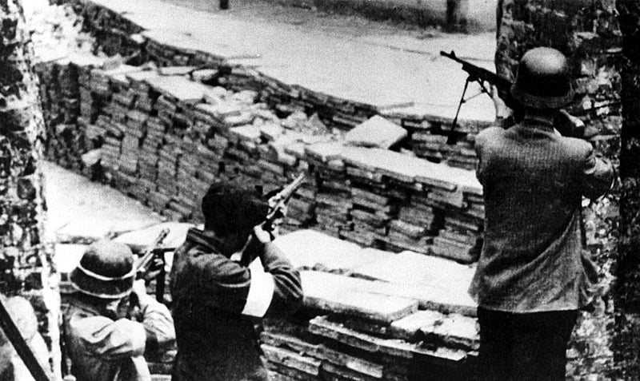
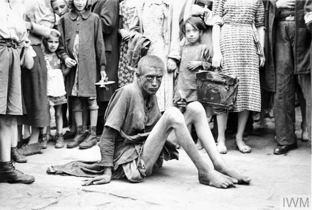

O Gueto de Varsóvia foi considerado o maior movimento de resistência judaica, além da primeira revolta civil armada contra a ocupação dos nazistas na Europa durante o período da Segunda Guerra Mundial. Por quase um mês, mais de 750 combatentes judeus, com pouco armamento e coragem de sobra, lutaram bravamente contra um exército de quantidade superior a dois mil soldados do exército alemão que possuíam armamento de sobra.

Todos os cidadãos ajudavam com o que era possível, até mesmo as crianças. Desde ajudar na mobilização até trazer e levar informações ou alimentos.

O Levante foi o ápice de um movimento que vinha florescendo desde um ano antes, no verão de 1942.